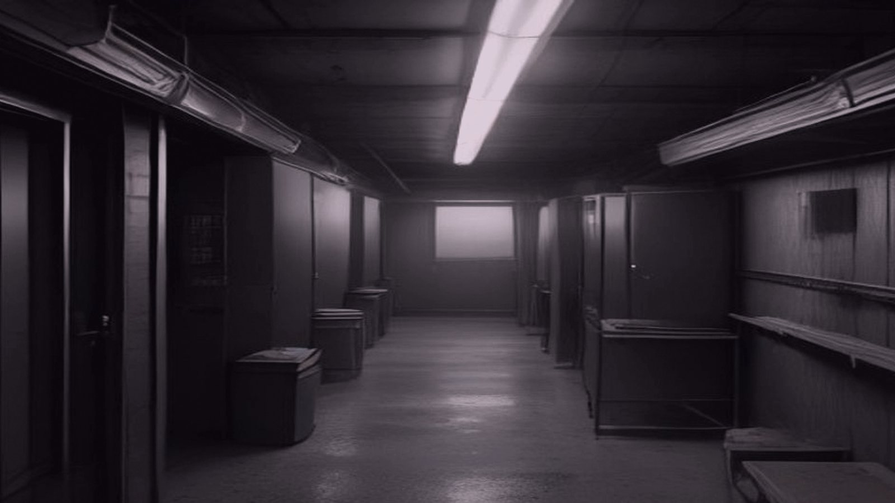
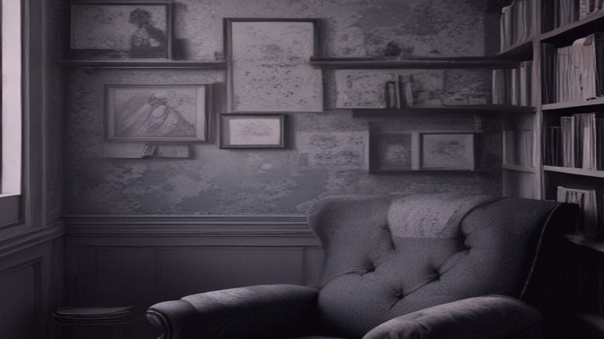
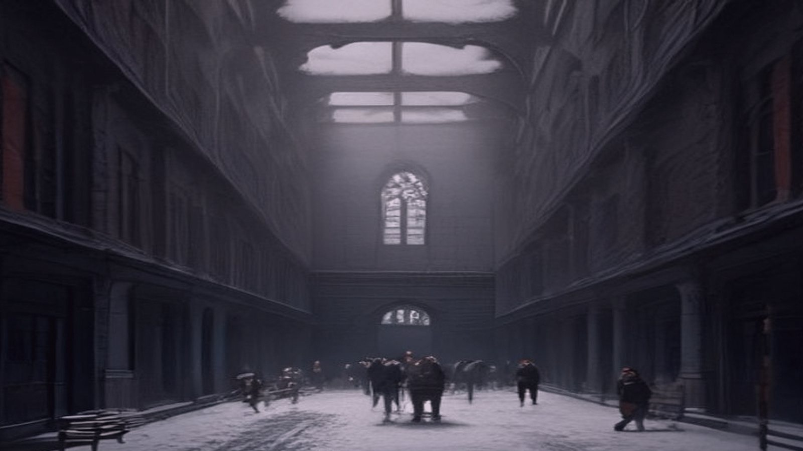
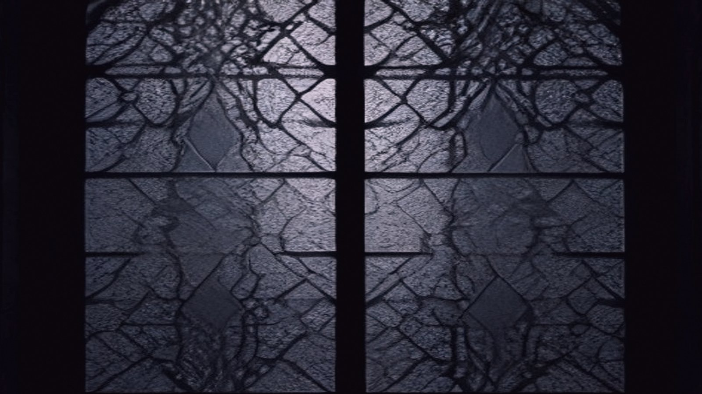

Adele Ziegler poured steaming water over the last of the instant coffee, watching it swirl into a murky brown. The machine on the counter had been acting up lately, and she'd given up trying to get someone to fix it. It was just her, anyway – the sole visitor to this sprawling boarding school's empty dormitories over the holidays.
She added sugar, then paused, staring out the frost-patterned window at the snow-covered quad below. January 2nd already, and the term wouldn't resume for another week. Adele sipped her coffee, letting the bitter taste wash over her tongue, as she sorted through the day's schedule. More of the same: quiet days, solitary walks, and an occasional visit to the infirmary if someone had managed to get a cold or flu despite the school's strict quarantine protocols.
The administrative offices were dark and still, their blinds drawn against the winter sun. Adele moved on, her footsteps echoing down the hallway as she made her way to the student dorms. She had a meeting with the assistant head – something about reviewing the upcoming year's chapel schedule – but first, she needed to check in on one of the students: Emma Taylor, a quiet kid from a small town in Ohio whose parents had withdrawn her due to family reasons. Adele found Emma in her room, huddled over a book, and they exchanged pleasantries before Adele excused herself.
As she continued down the hall, she noticed a faint scent of worn fabric – an old coat, maybe? – coming from room 314. She made a mental note to ask maintenance about it later. The room itself was dimly lit, its furniture scattered and mismatched, but a glance at the desk showed nothing out of place.
In the administrative office, Adele set down her coffee mug on the edge of the assistant head's desk – a chip on the same side as hers caught her eye, before she refocused.
As Adele made her way to the next room on her schedule, she noticed something peculiar on the floor. Footprints led out of 314, disappearing around the corner into the corridor beyond. She felt a faint sense of unease and quickened her pace.
What could be going on in here?
She followed the footprints, wondering if one of the maintenance staff had been in the room without clearing it with her. But as she turned the corner, the prints stopped abruptly at the elevator. No one was waiting inside, nor had anyone passed through recently. The doors remained still.

Adele's eyes lingered on the spot where the footprints vanished. She checked the room numbers along the corridor – 313, 315, 316 – but saw nothing unusual. It must have been a janitor or someone else not on her list. The administration would be able to provide an explanation.
Must be
She let out a small breath and continued with her rounds. The rest of her visits passed without incident, each student and faculty member seeming content to remain at the school for the holiday break. Adele couldn't help but feel a sense of relief that she could devote time to her duties here, away from the demands of her usual position.
In the common room, she helped serve lunch to a handful of students. The chatter was subdued, but polite. As they finished and began cleaning up, Adele took in the atmosphere – the faint scent of last night's dinner lingered on the air, mingling with something else...
Adele moved on to her next stop, the student dormitory. She had a scheduled visit with a young man named Michael, who had been struggling with his studies. As she entered his room, she noticed he was sitting at his desk, staring out the window. He didn't seem to be paying attention to his surroundings.
"Adele," he said flatly, without looking away from the window.
"Hello, Michael. How's your day going?" Adele asked, trying to sound cheerful.
It's just a long stretch of silence. He's worried about his parents' visit.
Michael shrugged, still gazing out the window. "It's fine, I guess."
Adele walked over to him and put a hand on his shoulder. "I'm glad you're doing all right. Is there something on your mind that you'd like to talk about?"
As she spoke, she felt an odd sense of being watched. She glanced around the room, but saw nothing out of place. The same books were stacked in the corner, the same clothes hung on the wall rack.

Must be my imagination. Everyone's a little spaced out during the holiday.
Michael stood up, still not looking at her. "No, I'm fine. Just... just thinking."
Adele nodded and smiled, feeling a slight tension in her shoulders. "Well, if you ever need to talk, I'm here for you. Okay?"
As she turned to leave, her eyes landed on the folded jacket lying across his bed. It was one of hers, with her own handwriting inside the collar. She felt a flutter in her chest.
I must have lent it to him. He borrowed it and forgot to return it.
Adele pushed aside the thought and continued with her rounds, trying to shake off the feeling that something was off. The words echoed in her mind: she had been there, he had spoken to her... but when?
Adele sat at her desk, flipping through the worn pages of Michael's file. She was trying to confirm his family situation – had they called in, or did he have a planned trip with them? The phone line crackled to life as she dialed the school's main number, but the switchboard picked up and told her no one was available. "Try again at 8 am," the voice said cheerfully. Adele scribbled down the note.
She tried calling Michael's parents herself, but the landline in her office refused to connect. She checked the line, thinking it might be a temporary glitch, but the dial tone just wouldn't come through. Shrugging, she decided to try again later.
Outside, the sky had turned a sickly shade of yellow – one of those winter holiday days where the sun seemed reluctant to rise. Adele pulled on her coat and stepped out into the chill, the crisp air stinging her face. She walked towards the main building, noticing that the wind carried an unfamiliar smell: something sweet and acrid, like burnt sugar.
The courtyard was empty except for a few scattered students huddled in doorways or leaning against walls, trying to catch some warmth. Adele recognized some of them, but their eyes seemed... different. More guarded, perhaps. She passed by the cafeteria, where Mrs. Jenkins was setting up breakfast for the early risers. The smell of toast and eggs wafted out, and Adele's stomach growled in response.

She checked her watch – 7:45 am. Time to get some real coffee. The main office, where she'd tried calling from earlier, looked deserted now. But as she pushed open the door, a faint hum caught her attention. The lights were on inside, and the computer screen flickered with an open email window... but the name in the "From" field made no sense to Adele: Michael@ .
Adele's eyes lingered on the computer screen, and she felt a shiver run down her spine. The name in the "From" field seemed to stare back at her, like a challenge. She shook her head, telling herself it was just a prank, but the feeling persisted.
As she turned to leave, her gaze drifted to the old photographs on the office walls. They showed happy students and faculty members, smiling and waving for the camera. Adele's eyes landed on one in particular – a group shot of the school's choir standing in front of the auditorium. But one figure stood slightly out of frame, not quite part of the group.
Adele's mind flashed back to her own arrival at the school, and how she'd been welcomed by Mrs. Jenkins herself. The warmth in the woman's smile seemed genuine, but now Adele couldn't shake the feeling that something was off.
The air in the office grew thick with an acrid smell, like chlorine from a pool, but Adele knew there was no pool here. She'd checked the facilities map multiple times. Yet, the scent lingered, making her eyes water.
She turned away from the photograph, and that's when she noticed it – the sound of typing on a keyboard, coming from somewhere else in the building. The hum of the computer screen seemed to grow louder, as if trying to drown out the noise. Adele's skin crawled as she realized she wasn't alone.
Adele's hand hovered over the phone on the desk, her fingers twitching to dial Jenkins' office again. But she hesitated, the silence in the room growing thicker than the air. The typing noise had stopped, but now she could sense a presence in the room with her.
The temperature seemed to drop by five degrees. Adele felt it seep into her bones, making her teeth chatter. Her skin prickled with goosebumps as she noticed the windows behind her were no longer transparent. Frost etched intricate patterns on the panes, like delicate lacework. The courtyard outside was shrouded in a mist that seemed to cling to the glass.

Adele's eyes strayed from the window to the space around her. The room had shifted, somehow. The furniture was rearranged, and the bookshelves now formed an enclosure, trapping her against the wall. A faint scent of damp earth wafted through the air, mingling with the acrid smell from before.
The sound of her own breathing grew louder in her ears, a steady drumbeat that seemed to synchronize with the pressure building in her chest. Adele's lungs constricted, as if someone was pressing down on them from the inside. She tried to inhale deeply, but her breath caught in her throat.
A faint scratching noise began, like fingernails on drywall. It started near the bookshelves and moved towards her. The sound grew louder, more insistent, and Adele's heart pounded against her ribs. Her skin crawled as she realized whatever was making that noise was moving towards her, step by agonizing step.
Adele's legs gave out from under her, and she crashed to the cold floor with a muffled thud. The sound of fingernails on drywall grew louder still, but she dared not look away from the exit. Her fingers scrabbled for the handle, found it, and yanked it open. A narrow stairway unfolded before her, lit by flickering fluorescent bulbs that cast faint shadows on the walls.
She didn't hesitate; she'd been searching for this door for what felt like hours. As she descended the stairs, the scraping noise grew fainter, and a thin hum began to fill the air – the sound of a generator whining into life. Adele's breath came in ragged gasps now, but she pushed on, her feet pounding the metal steps.
The stairway opened onto a narrow corridor, lined with doors that seemed to stretch on forever. Adele spotted a sign, partially hidden behind a potted plant: "Isolation Wing, Section 4". She felt a cold dread creeping up her spine as she realized this wasn't a new route – it was the one she'd been trying to find all along.
As she turned down the corridor, a door slid open ahead of her. Dr. Jenkins stood in the doorway, his face pale and pinched, a small smile playing on his lips. "Ah, Adele," he said, his voice low and smooth. "I see you've found your way out."
Adele's heart dropped. She remembered now – the doctor's words, his tone, his explanation of her treatment plan. It all made sense now: the isolation was a deliberate choice, not a necessity. The three letters she'd written to no one, the ones that had never been answered – they'd been part of this, too.
"What have you done?" Adele whispered, her voice barely audible over the generator's whine. Dr. Jenkins' smile grew wider, but his eyes remained empty. "You were always meant to find it," he said.
Adele's gaze drifted away from Dr. Jenkins' empty eyes, back to the ordinary world beyond the generator's hum. It was 8:15 now, a new day beginning. The courtyard was still empty, but the windows along the walkways reflected the faint glow of morning lamps.
She thought about the schedule, how it would have to be revised with her...absence in mind. Would anyone even notice? Would anyone care?
Adele's thoughts were interrupted by the soft beep of a computer terminal nearby. She turned to see a maintenance worker, his face familiar but his name escaping her, scrolling through a list on the screen.
"Good morning, Reverend," he said, not looking up. "Just checking the schedule for the week. You're still down for your counseling session with Dr. Jenkins at three today?"
Adele's heart skipped a beat. Three o'clock today. She had no counseling session scheduled. None today or any other day.
The worker's eyes flickered to hers, and he nodded once before returning to his task. Adele forced herself to breathe. What would she say to him? That she'd rather not attend her own therapy session?
As the morning routine continued around her, Adele noticed something else: a small notebook on the edge of the console, its pages filled with neat handwriting and dated entries from weeks ago.
On one page, a single sentence was underlined: "Water treatment plant needs chlorine levels checked daily."
She remembered no such thing, but it felt true.